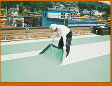
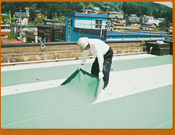
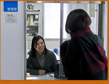
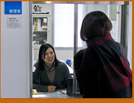
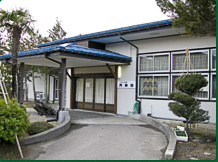

建物は、竣工時から劣化が始まります。日頃から適切な方法での清掃を行うことが、大切です。 床やトイレの清掃、ゴミ処理など多様な作業があります。
日常清掃では行えない、床の洗浄・ワックス掛けを行います。ワックスを定期的に掛けることで、汚れの付着を防ぐと共に、床面素材を守ることが出来ます。
普段では行えない高所に位置するガラス・ガラス外面の清掃を行います。排気ガス、黄砂、塩害のひどい所に立地している建物は、特に必要な業務です。
不定期の清掃業務を指します。主にお盆や、年末に行われます。照明器具清掃、ブラインド清掃、給排気口清掃、高所除塵、外壁洗浄、柱・壁面清掃etc...
産業廃棄物以外の一般家庭や事業所から 出される廃棄物の収集・運搬を行います。
事業活動に伴って生じた廃棄物の収集・運搬を行います。

事業活動に伴って生じたものの中で、『人の健康又は生活環境に係わる被害を生じる恐れがある廃棄物』の収集・運搬を行います。
生活用水以外の水に関しても、小児等が誤飲すれば、健康被害を生じる可能性があります。そのため、雑用水に関してもしっかりとした水質管理が必要です。

建築物内の排水設備の不備や管理の不適正は、衛生害虫や悪臭などの発生の原因となり、建築物内およびその周辺の環境衛生を著しく悪化させる大きな要因となります。それを予防する重要な業務です。
日々衛生的で快適な空気環境を提供し、最も経済的で安全な運転を行うために、経験豊富な技術者が日々のデータ分析・点検等により運転・保守管理を行います。
建築物における上下水道等の給排水設備は、事業活動や環境衛生を保持する上で必要なものです。こうした水の処理設備を適切に管理します。
その他、保守・改修等の業務を行います。
※電気設備、防災設備、昇降設備、自動ドア設備など

盗難や火災などの事故発生がないかどうか巡回点検により安全を確認し、トラブルの防止に努めます。
犯罪行為に加え交通災害の防止に努め、駐車場や建物周辺での皆様の安全を確保します。
- 
建物をいつまでも美しく、快適に維持するためには、中長期の展望に立った管理が必要です。諸施設の営繕工事を、熟練した技術者が責任を持って行います。
- 
- 
学生寮や宿泊施設において、お客さまに安心・安全・快適に過ごしいただくために、入退館確認や案内、清掃などを行います。
- 

各施設における、利用申込みの受付、利用・施設案内、利用状況確認などの窓口業務を行います。
施設によって多種多様な電話が掛かってきます。丁寧な言葉遣いや対応はもちろんのこと、用件を適切に判断し、正確に伝達する能力が必要となる業務です。

Total Managementとして文化施設を始め、さまざまな施設を受託しており、
今までの経験を基に、企画から運営まで行っております。
主な企画実績
・市民対抗音楽祭「バンドバトル イン アルカディア」in 見附市文化ホールアルカディア
・市民創作劇「瞽女待つ山里」in上越文化会館
・産学連携アニメーション制作「かぐや姫」in長岡市青少年文化センター
・市民オーケストラの立上げ支援「北区フィルハーモニー管弦楽団」in北区文化会館
・特別企画展「自然エネルギー展」in石油の世界館
-
見附市立海の家 海・海ハウス
新潟県長岡市寺泊郷本188-1
TEL：0258-75-2165
FAX：0258-75-2625
mitsuke-uminoie@shiteikanrisha.jp

老人福祉センター いこいの家 得雲荘
新潟県新潟市西蒲区仁箇2730-1
TEL：0256-73-3867
- 
老人福祉センター いこいの家 月寿荘
新潟県新潟市南区月潟770
TEL：025-375-2474 -
老人福祉センター いこいの家 楽友荘
新潟県新潟市南区味方583-1
TEL：025-375-2474 -
大牟田駅東口自動車駐車場
大牟田駅東口自転車等駐車場福岡県大牟田市大字大牟田1232-6
TEL：0944-43-3184
FAX：0944-43-3184
-
新大牟田駅駐車場
福岡県大牟田市大字岩本2261-1
-
大牟田駅西口自転車等駐車場
福岡県大牟田市久保田町2-303
TEL：0944-43-4805
-
観光物産館・古代館
新潟県新潟市秋葉区金津1193
TEL：0250-22-6911
FAX：0250-22-6910
sekiyu-bussankan@shiteikanrisha.jp
提案から検証・維持管理まで、最適なご提案をしています。ESCO事業、NEDOなど各種補助金の
利用といった方法で、気軽に始めることができます。お気軽にお問い合わせください。
主な実績(*1)
1.「設備運転管理業務の効率化、深夜電力の有効利用など」in 新潟市役所本庁舎
共同事業体：株式会社山武、株式会社ナカ・エンジニアリンググループ
2.「VEVコントロールシステムの導入」in 特別養護老人ホーム「うおの園」・「ゆのさと園」
3.「VEVコントロールシステムの導入」in特別養護老人ホームしなの園、せんだんの館
(*1) :全てESCO事業によるものです。また1、2はNEDOの補助金を頂いております。
-
今ご使用中の空調機や照明といった建物に付随する設備にかかるエネルギーを
制御することによって、コスト並びにCO2の削減を図ります。
冷温水発生機に対応したVEVコントロールシステムをメインに行っています。
VEVコントロールシステム
従来の冷温水発生機ですと、ポンプなどに過剰なエネルギーを消費しています。
VEVコントロールシステムはそのエネルギー量を70〜90％を削減するシステムです。
（削減量は施設によって異なります。）
詳しくはこちら →関連会社 エクセルラボ -
安全で環境にやさしい発電方法が近年注目を集めております。
弊社では、これからのお客さまの財産のために、
最善な方法をご提案できるように努めております。
～開発から提供まで～
長年の建物総合管理の経験を生かし、
使用効果・コスト・環境面など様々な角度から研究し、
用途に対応した最良の効果を発揮する商品を幅広く取り揃えています。